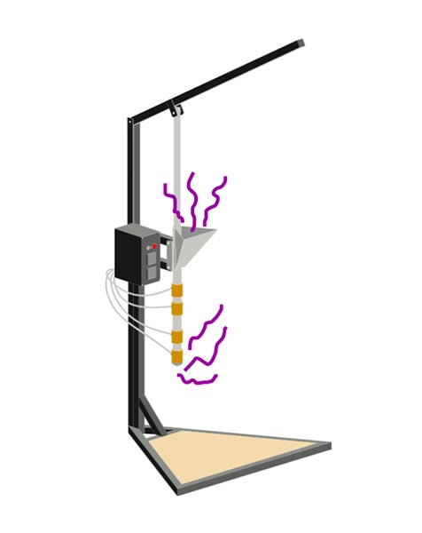

Safety and Fumes
安全性と煙
真剣に取り組むことが重要だ。
プラスチックを扱う上で、安全性は非常に重要なトピックです。ここでは、ヒュームにさらされる危険性や、どのようなプラスチックを扱うと安全でないかを説明し、プレシャス・プラスチックの濾過システムをどのように設置しているかを紹介します。
ヒント：プラスチックはできるだけ低温で、短時間で溶かすこと。
スモークの危険性
 最初のルールは、プラスチックを燃やさないこと。これはとても重要だ。なぜか？プラスチックは、あなた自身、あなたの周りの人々、そして環境にとって極めて有害だからです。 プラスチックを燃やすと非常に有害な毒素が放出され、ガンや呼吸器疾患、先天性欠損症になる可能性が大幅に高まります。また、内臓やホルモン系にも大きなダメージを与えます。
ポリ塩化ビニールを燃やすとダイオキシンが発生します。ダイオキシンは非常に有毒な化合物で、ガンや生殖障害、免疫系障害を増加させることがわかっています。プレシャス・プラスティックでは、PVCは使用しません。
もしプラスチックの小片を燃やしてその種類を特定する必要がある場合は、マスクを着用し、適切な煙霧濾過装置のそばで行うなど、適切な予防措置を講じること。プラスチックを扱う上で最も重要なこと：溶かすことはできるが、燃やすことはできない。そしてこれが重要な違いだ。
最初のルールは、プラスチックを燃やさないこと。これはとても重要だ。なぜか？プラスチックは、あなた自身、あなたの周りの人々、そして環境にとって極めて有害だからです。 プラスチックを燃やすと非常に有害な毒素が放出され、ガンや呼吸器疾患、先天性欠損症になる可能性が大幅に高まります。また、内臓やホルモン系にも大きなダメージを与えます。
ポリ塩化ビニールを燃やすとダイオキシンが発生します。ダイオキシンは非常に有毒な化合物で、ガンや生殖障害、免疫系障害を増加させることがわかっています。プレシャス・プラスティックでは、PVCは使用しません。
もしプラスチックの小片を燃やしてその種類を特定する必要がある場合は、マスクを着用し、適切な煙霧濾過装置のそばで行うなど、適切な予防措置を講じること。プラスチックを扱う上で最も重要なこと：溶かすことはできるが、燃やすことはできない。そしてこれが重要な違いだ。
揮発性有機化合物（VOC)
すべてのプラスチックは大きな分子でできており、溶けると小さな分子がガスとなって発生します。これらのガスは揮発性有機化合物とも呼ばれ、目や鼻、肺に深刻な刺激を与え、安全対策なしに合成プラスチックのガスに長期間さらされると、ガンや先天性異常、病気につながる可能性があります。 下のグラフに見られるように、一般的なプラスチックのヒューム含有量は、大気・廃棄物管理協会、中国科学院、東京大学によって調査された。その結果、ABSとPSが最も多くのヒュームを発生させ、他のプラスチックの約5～7倍であった。
 ABSやPSから発生するヒュームには、スチレン、ベンゼン、エチルベンゼンが含まれています。これらの化合物は環状化合物と呼ばれ、多くのヒュームを発生させ、ガンを引き起こす可能性があります。ベンゼンはヒト発がん性物質であり、スチレンとエチルベンゼンは発がん性物質である可能性が高い（発がん性物質である可能性が高いとは、その化合物ががんを引き起こすことがまだ証明されていないことを意味する）。幸いなことに、これらの環状化合物はすべて活性炭で簡単にろ過できるが、これについては後述する！
ABSやPSから発生するヒュームには、スチレン、ベンゼン、エチルベンゼンが含まれています。これらの化合物は環状化合物と呼ばれ、多くのヒュームを発生させ、ガンを引き起こす可能性があります。ベンゼンはヒト発がん性物質であり、スチレンとエチルベンゼンは発がん性物質である可能性が高い（発がん性物質である可能性が高いとは、その化合物ががんを引き起こすことがまだ証明されていないことを意味する）。幸いなことに、これらの環状化合物はすべて活性炭で簡単にろ過できるが、これについては後述する！
PPとPEは環状化合物が少なく、本質的に精製されたワックスであるため、溶かして最も安全なプラスチックである。PVCとPAはヒュームが少ないが、中身は溶かすと有害である。
ヒュームテスト
ヒューム検査にはPID検出器を使用します。これは光イオン化の略で、VOCのヒューム安全レベルを検出し、ヒュームがどこから発生しているかを正確に知ることができます。PIDセンサーを使用する利点は、非常に正確で携帯できることで、移動可能なフレキシブルなヒューム抽出システムを設計できます。 有機化合物は光を通過する際にプラスに帯電したイオンを放出し、それがマイナスに帯電したプレートに捕捉され、測定可能な電流が発生する。 我々の結果だ： 私たちの作業スペースでは、発生源から2cmの距離からヒュームを検出し、推奨される最大値の約14倍でした。PSはHDPEとPPの5倍のヒュームを発生させた。これはHDPEとPPは環状化合物が非常に少ないことを意味する。また、各機械のどこからヒュームが発生したかも検出しました（詳細は後述）。 炭化水素含有量の3時間最大濃度は0.24ppmで、1年以上超過してはならない[2]。結論として、最大の脅威はPSの溶解によって発生するスチレン蒸気である。
詳細はhttps://tinyurl.com/y5r2u3u4。
貴重なプラスチック機械からの発煙源
では、プレシャス・プラスチックの機械からはどこから煙が出るのですか？
1.金型を外すとノズルから煙が出る。 2.インジェクターハンドルを上げると、ホッパーから煙が出る。  押出機について
1.ほとんどのヒュームはノズルから出る
2.ペレットで塞がれていないホッパーおよび金型開口部からの若干のヒューム。
3.例えば、梁を作るとき、梁の金型の端からヒュームが出る。

シートプレス 1.ほとんどの煙は四方から出ている 2.暖房にムラがあると、過熱した部分から煙が出る。 3.コールドプレスの段階で7分間、まだ煙が出ていた。
ヒント
- プラスチックを溶かす前によく洗ってください。洗浄剤の残留物は有害なガスを発生させます。
- なぜなら、プラスチックの種類によって溶ける温度が異なり、あるプラスチックは他のプラスチックより先に燃えてしまうからだ。
- PSやABSを扱う場合は、週に8時間以上溶かさないようにし、必ずガスマスクと換気装置を使用すること。
- 普通の防塵マスクは使わないでください！必ず活性炭フィルターの防毒マスクを使ってください。また、防毒マスクが正しく装着されていることを確認してください！
- できるだけ低い温度で、できるだけ短い時間でプラスチックを溶かす。
- めまいを感じたり、呼吸が苦しくなったりした場合は、ガスから離れ、新鮮な空気の場所に移動してください。
- ヒュームの発生源から離れること-推奨される最大暴露量の14倍もある。 換気がない場合は、マスクをして2メートルほど離れた場所に立つ必要がある。
- 押出成形と射出成形には、調節可能なアームを備えたヒュームキャディが必要である。シートプレスでは、ヒューム抽出フードを機械設計に含める必要があります。
- 作業場の空気が安全かどうか、フィルターが正しく機能しているかどうかをチェックするために、低価格のVOC検出器を購入する。
安全ギア
プラスチックを扱うときは、活性炭フィルターの防毒マスクと、同じく活性炭を使用した独立型の抽出フィルターを用意する必要がある。活性炭は素晴らしい素材であり、命の恩人でもある！環状化合物をよくろ過し、世界中どこでも簡単に手に入るので、私たちはこれを使うことにしました。私たちはまた、活性炭フィルターを備えたLEVシステムを機械やワークスペースの特定の場所に組み込むこともできます。
換気（LEV）
 LEVとはLocal Exhaust Ventilationの略で、有害な空気を効率的に換気するための業界標準である。このシステムは、汚染物質の雲をLEV内に入れるためのフード、フードから排出地点まで空気と汚染物質を移動させるダクト、そして毎時780～1000立方メートル（の）の遠心ファンの3つの部分からできている。
LEVとはLocal Exhaust Ventilationの略で、有害な空気を効率的に換気するための業界標準である。このシステムは、汚染物質の雲をLEV内に入れるためのフード、フードから排出地点まで空気と汚染物質を移動させるダクト、そして毎時780～1000立方メートル（の）の遠心ファンの3つの部分からできている。
活性炭
活性炭フィルター（ACF）は、最もクリーンで簡単なフィルターです。ACFは表面積が大きく、通常のカーボンよりも多くの細孔を持つように処理されているため、ヒュームはこれらの細孔によく付着し、厄介なものをろ過するのに最適な素材です。ACFは以下のVOCをよく除去する：トルエン、キシレン、スチレン、アルコール、ベンゼン、デカン、エチルベンゼン、ヘプタン、オクタン、および以下のガス：ペンタン、アセトン、ヘキサン[3]。気孔率は活性炭の最大の特徴である。しかし、活性炭は長持ちしないので、フィルターを交換する必要がある。化合物は私たちには見えないが、通常はフィルターで除去される独特の臭いがある。臭いを感じたら、フィルターの交換時期だ。
スタンドアロン・フィルター
 このようなフィルターは約40～50ユーロで、およそ2～3kgの粒状活性炭が入っており、毎月交換する必要がある（より長持ちする大きなフィルターも手に入る）。これらのフィルターは、換気用の遠心ファンに取り付けることができる。湿度70％以下、周囲温度80℃以下が望ましい。
このようなフィルターは約40～50ユーロで、およそ2～3kgの粒状活性炭が入っており、毎月交換する必要がある（より長持ちする大きなフィルターも手に入る）。これらのフィルターは、換気用の遠心ファンに取り付けることができる。湿度70％以下、周囲温度80℃以下が望ましい。
カーボン顆粒（VOC除去用）の購入
フィルターの交換が必要になった場合、新しいフィルターを購入する必要はない。代わりに、使用済みの活性炭を交換するために活性炭の粒を購入することができます - この使用済み炭素は、地方自治体の埋立地に置くことができます。ヨウ素価が1050mg/g以上の活性炭を購入するのがベストです。ヨウ素価は活性表面積の目安です（ヨウ素価が大きいほど濾過能力が高い）。
ガスマスク
ガスマスクも非常に重要で、濾過は100％ではないので、これは追加の障壁として機能する。大規模な産業リサイクルや製造業でさえ、清浄な空気には到達していないため、防毒マスクは一般的な習慣となっている。最も一般的なマスクは3M製で、マウスピース、フィルターカートリッジ、ダストフィルターホルダー、ダストフィルターの4つの部品から構成されている。カートリッジとダストフィルターの交換が必要になるまで、50時間使用できる。
それで終わりだ！
適切なガスマスクと抽出濾過の安全対策を講じれば安全です。PVCやABSでは作業しないでください。最も安全なプラスチックはPP、LDPE、HDPEです。ただし、PSを溶かすことができるのは週に8時間までであることをお忘れなく。 すべてのリソース
1.異なるプラスチック固形廃棄物から排出されるVOCの汚染特性/健康リスク評価
フィードバックを共有したり、安全性についてチャットしたり、コミュニティからもっと学びたいですか？
Discordの#plasticチャンネルへどうぞ。
ここでは、プラスチック、安全性、煙霧、材料特性について話しています。